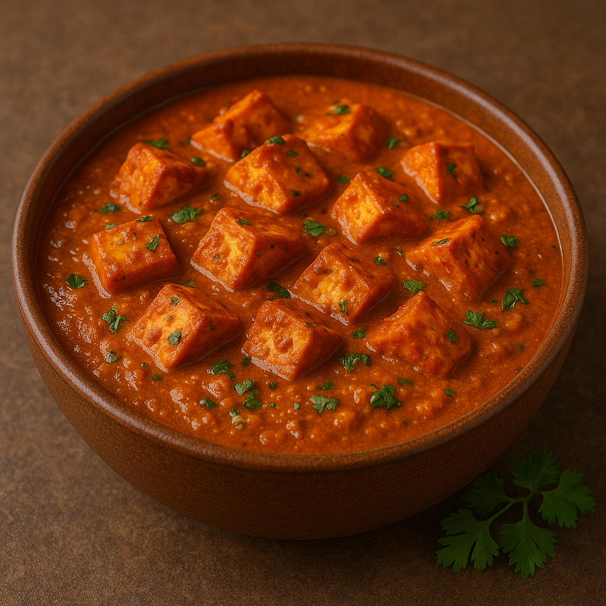

Home
Pizza Recipe

Description
Paneer Tikka Masala is a rich and creamy North Indian dish made with grilled paneer cubes simmered in a spicy tomato-based gravy.
It's a vegetarian delight often served with naan or rice and is known for its bold flavors and comforting texture.
Perfect for a cozy dinner or a festive occasion, this dish combines the smokiness of paneer tikka with the warmth of Indian spices.
Ingredients
- 250g paneer (cubed)
- 1/2 cup yogurt (thick)
- 1 tbsp ginger-garlic paste
- 1 tsp turmeric powder
- 1 tsp red chili powder
- 1 tsp garam masala
- 1 tsp cumin powder
- 1/2 tsp coriander powder
- 1 tbsp lemon juice
- 2 tbsp oil (for grilling)
- 2 medium onions (chopped)
- 2 medium tomatoes (pureed)
- 1/2 cup heavy cream
- Fresh coriander leaves (for garnish)
- Salt to taste
Steps
- In a bowl, mix yogurt, ginger-garlic paste, lemon juice, turmeric, chili powder, garam masala, and salt to make a marinade.
- Add the paneer cubes to the marinade and let it sit for at least 30 minutes.
- Grill or pan-fry the marinated paneer cubes until golden and slightly charred.
- Heat oil in a pan. Sauté chopped onions until golden brown.
- Add tomato puree, cumin powder, coriander powder, and cook until the oil separates.
- Add the grilled paneer to the gravy and mix well.
- Pour in the cream and simmer for 5-7 minutes on low heat.
- Garnish with fresh coriander and serve hot with naan or basmati rice.